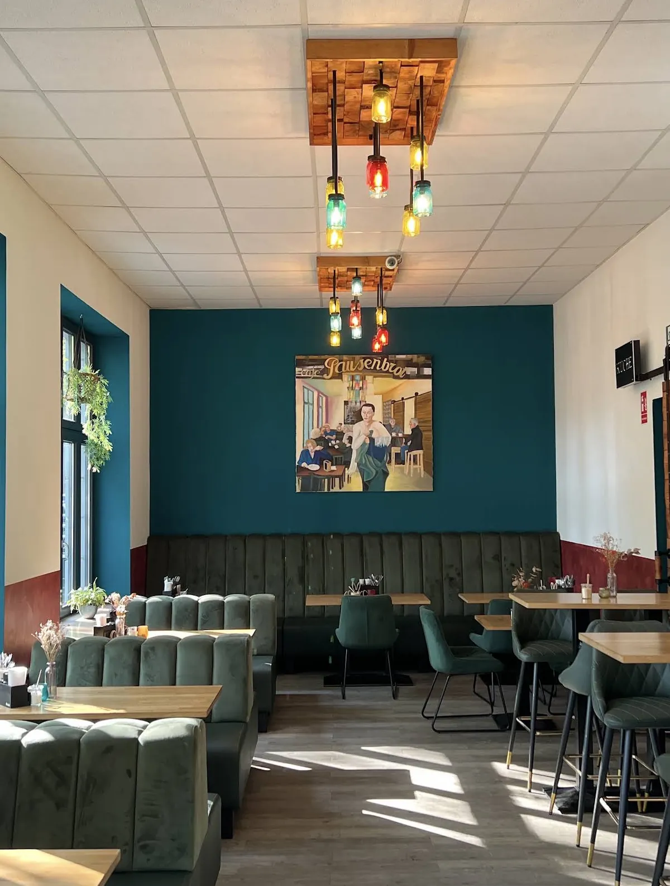
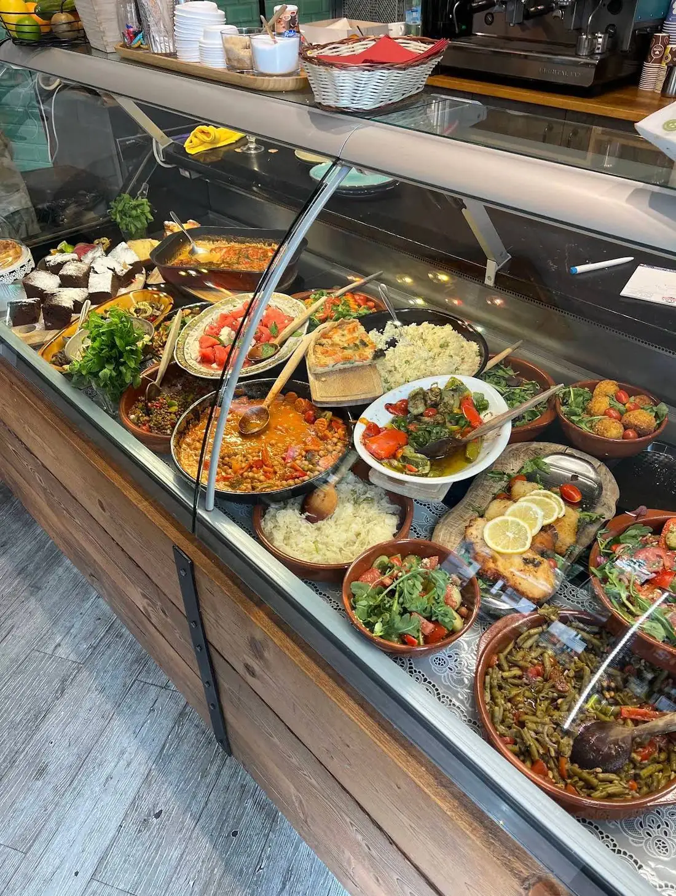
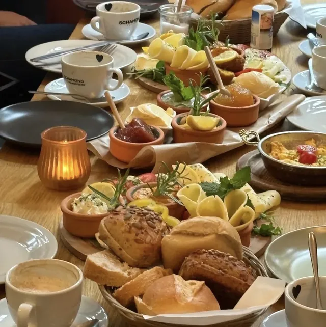
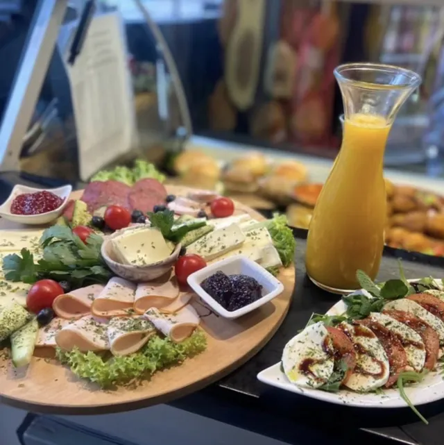
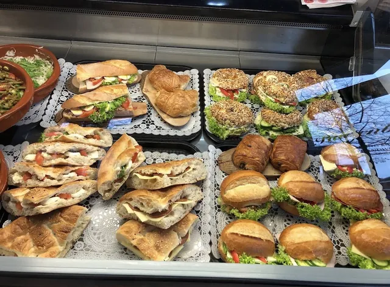
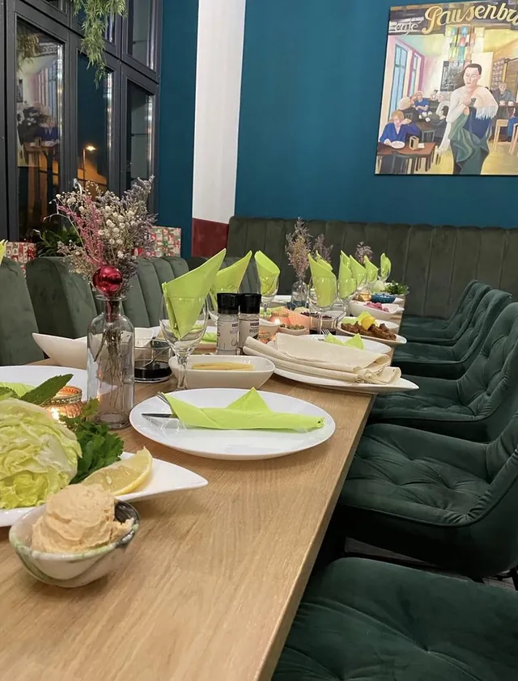

Rolandstraße 8, Südstadt
Frühstück, Mittag, Kaffee. Jeden Tag ab acht.
Morgens belegte Brötchen und Frühstück am Tisch, mittags eine Theke voller Salate, Eintöpfe und Quiche, dazu den ganzen Tag Kaffee von Schamong aus Ehrenfeld.
Täglich 8 bis 18 Uhr

Auch am Sonntag.Montag bis Sonntag, 8 bis 18 Uhr
Die Theke
Sie wird jeden Morgen neu gefüllt. Mal Linsensalat und Kichererbsen-Eintopf, mal Tortellini, gefüllte Auberginen oder Falafel. Was es gibt, siehst du, wenn du reinkommst.
Auf dem Foto steht, was an einem Tag drin war. Tipp auf die Punkte.





Morgens
Ein Korb Brötchen, Käse und Aufschnitt auf dem Holzbrett, Rührei in der Pfanne, kleine Tonschalen mit Aufstrich und Marmelade. Dazu frischer Orangensaft und ein Milchkaffee.
Wer es eilig hat, nimmt ein belegtes Brötchen mit. Die gibt es ab 2,60 €, mit Salat drauf 20 Cent mehr.
Kaffee aus Ehrenfeld
Die Bohnen kommen von Schamong, der Rösterei in Köln-Ehrenfeld. Den Espresso gibt es auch doppelt, Milch auf Wunsch pflanzlich, für 30 Cent mehr.
Wenn du morgens auf dem Weg bist: Vorbestellen, vorbeikommen, mitnehmen.

Platten und Buffets für eure Feier oder das Büro
Bagels, Wraps, Quiche, Falafel, Mozzarella-Spieße, Käse- und Aufschnittplatten mit Obst, warme Gerichte. Sag uns, wann und für wie viele, dann machen wir dir einen Vorschlag.
Abends was übrig?
Was wir am Abend nicht verkauft haben, landet nicht in der Tonne. Bei Too Good To Go gibt es unsere Überraschungstüte, die kleine kostet dort 3 €. Bring am besten eine eigene Dose mit.
Zu Too Good To GoWas gibt's heute?
Schau auf Instagram vorbei, oder ruf kurz an. Wir sagen dir gern, was in der Theke steht.
Rolandstraße 8
50677 Köln, in der Südstadt, ein paar Schritte vom Chlodwigplatz.
- Montag bis Freitag
- 8 bis 18 Uhr
- Samstag und Sonntag
- 8 bis 18 Uhr
An Feiertagen können die Zeiten abweichen. Im Zweifel kurz anrufen.

Die Karte kommt von OpenStreetMap. Erst wenn du sie öffnest, wird deine IP-Adresse dorthin übertragen.